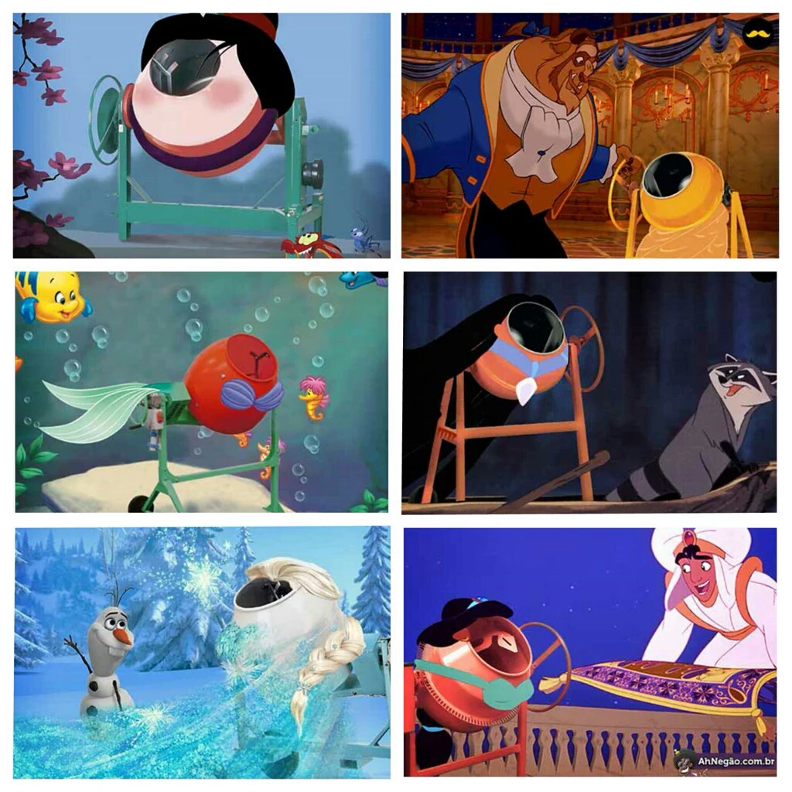

<ion-header>
  <ion-navbar>
    <ion-title>Home</ion-title>
  </ion-navbar>
</ion-header>

<ion-content padding>

  <!--IMAGE CAPTURING VIEW-->
  <ion-list *ngIf="GENERALMODE">
    <div class="row  page-home item">
      <div class="col col-50">
        <button class="page-home btn"
                ion-button small icon-only float-start
                tooltip="Show Saved Images" positionV="bottom"  duration="1200"
                (click)="showSavedImages()"
        >
          <ion-icon name="checkbox"></ion-icon>
        </button>

      </div>
      <div class="col col-50">
        <button class="page-home btn"
                ion-button icon-only float-end
                tooltip="Show Labels Settings" positionV="bottom" duration="1200"
                (click)="showLabelSettings()"
        >
          <ion-icon name="construct"></ion-icon>
        </button>
      </div>
    </div>
    <ion-list class="row">
      <button
        ion-button block full round icon-start
        *ngIf="shahadProject"
        (click)="captureImage()"
        tooltip="Capture Image" positionV="bottom" duration="1200">
        <ion-icon name="camera"></ion-icon>
        Take Picture
      </button>
      <button
        ion-button block full round icon-start
        *ngIf="rafidProject"
        tooltip="Import From Some Source" positionV="bottom" duration="1200"
        (click)="importFromSource()"
      >
        <ion-icon name="md-cloud-download"></ion-icon>
        Import From Source
      </button>
    </ion-list>
  </ion-list>

  <!--CAPTURED IMAGE VIEW-->

  <ion-card class="page-home ion-card" *ngIf="IMAGECAPTUREDMODE">
    
    <div class="row">
      <div class="col col-50">
        <button ion-button icon-start icon-only clear float-start>
          <ion-icon name="checkmark-circle"></ion-icon>
        </button>
      </div>
      <div class="col col-50">
        <button ion-button icon-start icon-only clear float-end>
          <ion-icon name="close-circle"></ion-icon>
        </button>
      </div>
    </div>
  </ion-card>


  <!--IMAGE EDITING VIEW-->
  <ion-list *ngIf="IMAGEEDITMODE">
    <angular-cropper #angular_cropper [cropperOptions]="CROPPEROPTIONS"
                     [imageUrl]="'https://fengyuanchen.github.io/cropperjs/images/picture.jpg'"></angular-cropper>

    <!--TODO: add *ngIf="capturedImage" to the construct below-->
    <ion-grid>
      <ion-segment>
        <ion-col text-center justify-content-center>
          <button ion-button class="page-home btn" small color="primary" icon-only (click)="zoom(true)">
            <ion-icon name="custom-zoom-in"></ion-icon>
          </button>
          <button ion-button class="page-home btn" icon-only small color="primary" (click)="zoom(false)">
            <ion-icon name="custom-zoom-out"></ion-icon>
          </button>
          <button ion-button class="page-home btn" icon-only small color="primary" (click)="scaleX()">
            <ion-icon name="custom-tab"></ion-icon>
          </button>
          <button ion-button class="page-home btn rotate-90" small icon-only color="primary" (click)="scaleY()">
            <ion-icon name="custom-tab" class=""></ion-icon>
          </button>
        </ion-col>
      </ion-segment>

      <ion-segment>
        <ion-col text-center justify-content-center>
          <button ion-button class="page-home btn" icon-only color="primary" (click)="move(0,-10)">
            <ion-icon name="custom-circle-up"></ion-icon>
          </button>

          <button ion-button class="page-home btn" icon-only color="primary" (click)="move(0,10)">
            <ion-icon name="custom-circle-down"></ion-icon>
          </button>

          <button ion-button class="page-home btn" icon-only color="primary" (click)="move(-10,0)">
            <ion-icon name="custom-circle-left"></ion-icon>
          </button>

          <button ion-button class="page-home btn" icon-only  color="primary" (click)="move(10,0)">
            <ion-icon name="custom-circle-right"></ion-icon>
          </button>

        </ion-col>
      </ion-segment>
      <ion-segment>
        <ion-col justify-content-center text-center>
          <button ion-button class="page-home btn" icon-only small color="primary" (click)="rotate()">
            <ion-icon name="custom-spinner11"></ion-icon>
          </button>
        </ion-col>
      </ion-segment>

      <button ion-button block icon-only round large color="" (click)="cropImage()">
        <ion-icon name="done-all"></ion-icon>
      </button>

    </ion-grid>

  </ion-list>


  <!--EDITED IMAGE VIEW-->
<ion-list *ngIf="IMAGECROPPEDMODE">

  <ion-card class="page-home ion-card">
    <ion-card-header>Cropped Image</ion-card-header>
    <ion-card-content></ion-card-content>

    <ion-list>
      <ion-item class="page-home ItemSpace">
        <ion-label>Label</ion-label>
        <ion-select [(ngModel)]="selectedLabel">
          <ion-option value = "None" >None</ion-option>
          <ion-option *ngFor="let label of allLabels.labels" [value] = "label" >{{label}}</ion-option>
        </ion-select>
      </ion-item>
    </ion-list>

    <div class="row">
      <div class="col col-50">
        <button ion-button icon-start icon-only clear float-start>
          <ion-icon name="checkmark-circle"></ion-icon>
        </button>
      </div>
      <div class="col col-50">
        <button ion-button icon-start icon-only clear float-end>
          <ion-icon name="close-circle"></ion-icon>
        </button>
      </div>
    </div>
  </ion-card>
</ion-list>


</ion-content>
